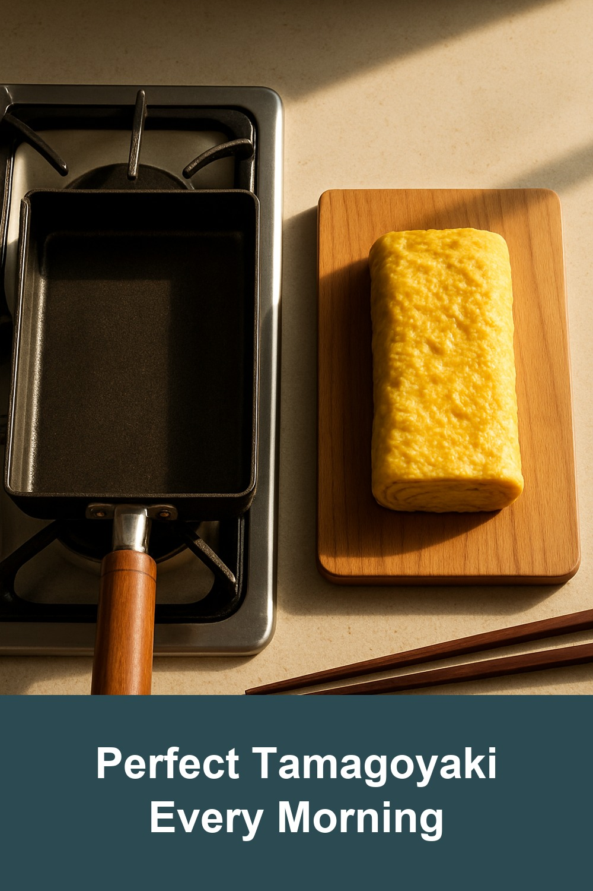
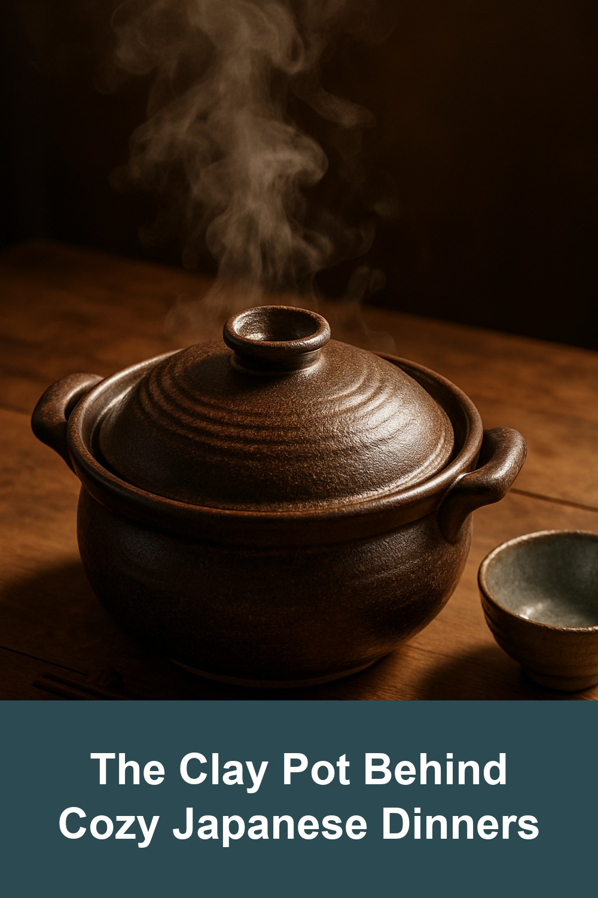
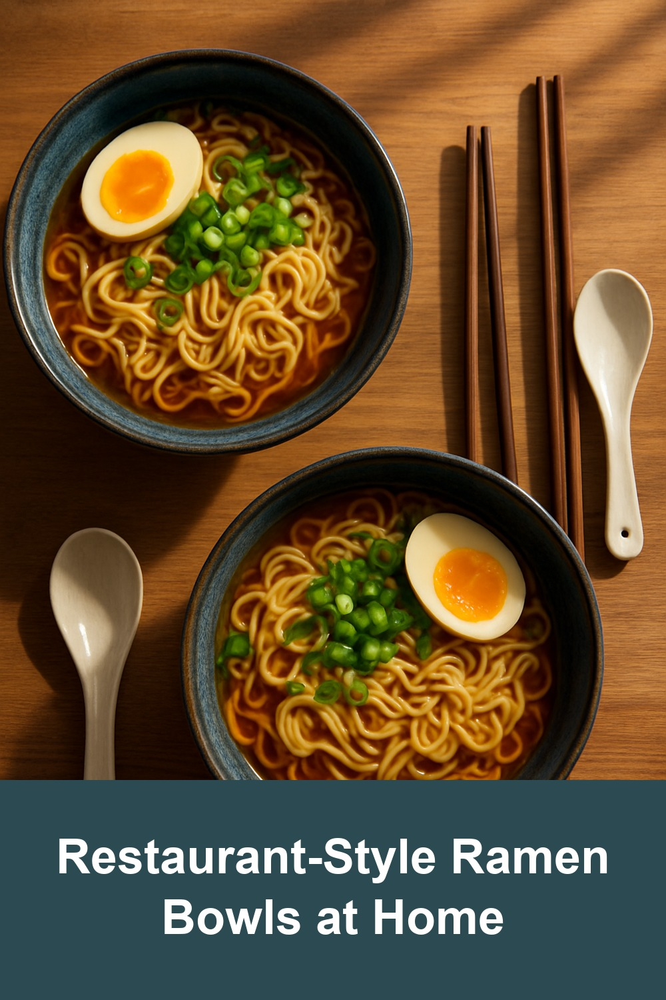

TECHEF Tamagoyaki Japanese Omelette Pan
$22.49
The rectangular pan Japanese home cooks swear by for silky, restaurant-style rolled omelettes — PFOA-free non-stick, dishwasher safe.
View on Amazon →
Banko Ware Ginpo Earthenware Pot (Donabe)
$40.95
Handcrafted Banko-yaki earthenware from Japan, perfect for individual hot pot, rice, and soup — retains heat and flavor like nothing else.
View on Amazon →
Japanese Ramen Bowl Set with Chopsticks, Spoons and Rests
$27.99
Deep porcelain noodle bowls with matching chopsticks and spoon rests — the easiest way to make weeknight ramen feel like a ryokan meal.
View on Amazon →